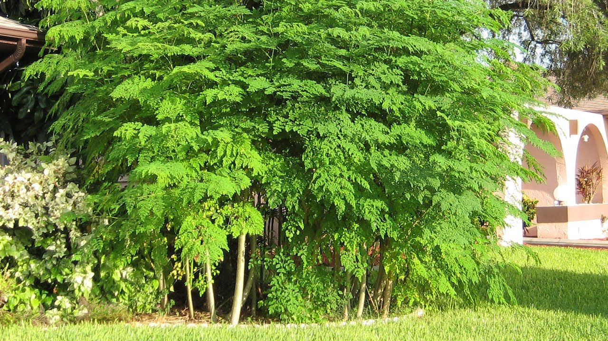

Lo que tienes que saber sobre La Moringa oleífera
La Moringa oleífera, conocido como moringa o ben, es una especie de árbol originario del norte de la India. Crece en casi cualquier tipo de suelo, incluso en condiciones de elevada aridez estacional, lo que hace de esta planta un recurso para las poblaciones que habitan en estos lugares.
Es un árbol caducifolio. Presenta rápido crecimiento, unos 3 m en su primer año pudiendo llegar a 5 m en condiciones ideales; adulto llega a los 10 o 12 m de altura máxima. Tiene ramas colgantes quebradizas, con corteza suberosa, hojas color verde claro, compuestas, tripinnadas, de 30 a 60 cm de largo, con muchos folíolos pequeños de 1,3 a 2 cm de largo por 0,6 a 0,3 cm de ancho. Florece a los siete meses de su plantación. Las flores son fragantes, de color blanco o blanco crema, de 2,5 cm de diámetro. Produce vainas colgantes color marrón, triangulares, de 30 a 120 cm de largo por 1,8 cm de ancho, divididas longitudinalmente en 3 partes cuando se secan; cada una contiene aproximadamente veinte semillas incrustadas en la médula. Semillas de color marrón oscuro, con tres alas.1 Su rusticidad lo hace muy fácil de cultivar.
